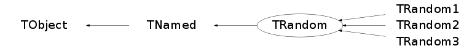

class TRandom: public TNamed
TRandom basic Random number generator class (periodicity = 10**9). Note that this is a very simple generator (linear congruential) which is known to have defects (the lower random bits are correlated) and therefore should NOT be used in any statistical study. One should use instead TRandom1, TRandom2 or TRandom3. TRandom3, is based on the "Mersenne Twister generator", and is the recommended one, since it has good random proprieties (period of about 10**6000 ) and it is fast. TRandom1, based on the RANLUX algorithm, has mathematically proven random proprieties and a period of about 10**171. It is however slower than the others. TRandom2, is based on the Tausworthe generator of L'Ecuyer, and it has the advantage of being fast and using only 3 words (of 32 bits) for the state. The period is 10**26. The following table shows some timings (in nanoseconds/call) for the random numbers obtained using an Intel Pentium 3.0 GHz running Linux and using the gcc 3.2.3 compiler TRandom 34 ns/call (BAD Generator) TRandom1 242 ns/call TRandom2 37 ns/call TRandom3 45 ns/call The following basic Random distributions are provided: -Exp(tau) -Integer(imax) -Gaus(mean,sigma) -Rndm() -Uniform(x1) -Landau(mpv,sigma) -Poisson(mean) -Binomial(ntot,prob) Random numbers distributed according to 1-d, 2-d or 3-d distributions contained in TF1, TF2 or TF3 objects. For example, to get a random number distributed following abs(sin(x)/x)*sqrt(x) you can do : TF1 *f1 = new TF1("f1","abs(sin(x)/x)*sqrt(x)",0,10); double r = f1->GetRandom(); or you can use the UNURAN package. You need in this case to initialize UNURAN to the function you would like to generate. TUnuran u; u.Init(TUnuranDistrCont(f1)); double r = u.Sample(); The techniques of using directly a TF1,2 or 3 function is powerful and can be used to generate numbers in the defined range of the function. Getting a number from a TF1,2,3 function is also quite fast. UNURAN is a powerful and flexible tool which containes various methods for generate random numbers for continuous distributions of one and multi-dimension. It requires some set-up (initialization) phase and can be very fast when the distribution parameters are not changed for every call. The following table shows some timings (in nanosecond/call) for basic functions, TF1 functions and using UNURAN obtained running the tutorial math/testrandom.C Numbers have been obtained on an Intel Xeon Quad-core Harpertown (E5410) 2.33 GHz running Linux SLC4 64 bit and compiled with gcc 3.4 Distribution nanoseconds/call TRandom TRandom1 TRandom2 TRandom3 Rndm.............. 5.000 105.000 7.000 10.000 RndmArray......... 4.000 104.000 6.000 9.000 Gaus.............. 36.000 180.000 40.000 48.000 Rannor............ 118.000 220.000 120.000 124.000 Landau............ 22.000 123.000 26.000 31.000 Exponential....... 93.000 198.000 98.000 104.000 Binomial(5,0.5)... 30.000 548.000 46.000 65.000 Binomial(15,0.5).. 75.000 1615.000 125.000 178.000 Poisson(3)........ 96.000 494.000 109.000 125.000 Poisson(10)....... 138.000 1236.000 165.000 203.000 Poisson(70)....... 818.000 1195.000 835.000 844.000 Poisson(100)...... 837.000 1218.000 849.000 864.000 GausTF1........... 83.000 180.000 87.000 88.000 LandauTF1......... 80.000 180.000 83.000 86.000 GausUNURAN........ 40.000 139.000 41.000 44.000 PoissonUNURAN(10). 85.000 271.000 92.000 102.000 PoissonUNURAN(100) 62.000 256.000 69.000 78.000 Note that the time to generate a number from an arbitrary TF1 function using TF1::GetRandom or using TUnuran is independent of the complexity of the function. TH1::FillRandom(TH1 *) or TH1::FillRandom(const char *tf1name) can be used to fill an histogram (1-d, 2-d, 3-d from an existing histogram or from an existing function. Note this interesting feature when working with objects You can use several TRandom objects, each with their "independent" random sequence. For example, one can imagine TRandom *eventGenerator = new TRandom(); TRandom *tracking = new TRandom(); eventGenerator can be used to generate the event kinematics. tracking can be used to track the generated particles with random numbers independent from eventGenerator. This very interesting feature gives the possibility to work with simple and very fast random number generators without worrying about random number periodicity as it was the case with Fortran. One can use TRandom::SetSeed to modify the seed of one generator. a TRandom object may be written to a Root file -as part of another object -or with its own key (example gRandom->Write("Random");
Function Members (Methods)
public:
| TRandom(UInt_t seed = 65539) | |
| TRandom(const TRandom&) | |
| virtual | ~TRandom() |
| void | TObject::AbstractMethod(const char* method) const |
| virtual void | TObject::AppendPad(Option_t* option = "") |
| virtual Int_t | Binomial(Int_t ntot, Double_t prob) |
| virtual Double_t | BreitWigner(Double_t mean = 0, Double_t gamma = 1) |
| virtual void | TObject::Browse(TBrowser* b) |
| virtual void | Circle(Double_t& x, Double_t& y, Double_t r) |
| static TClass* | Class() |
| virtual const char* | TObject::ClassName() const |
| virtual void | TNamed::Clear(Option_t* option = "") |
| virtual TObject* | TNamed::Clone(const char* newname = "") const |
| virtual Int_t | TNamed::Compare(const TObject* obj) const |
| virtual void | TNamed::Copy(TObject& named) const |
| virtual void | TObject::Delete(Option_t* option = "")MENU |
| virtual Int_t | TObject::DistancetoPrimitive(Int_t px, Int_t py) |
| virtual void | TObject::Draw(Option_t* option = "") |
| virtual void | TObject::DrawClass() constMENU |
| virtual TObject* | TObject::DrawClone(Option_t* option = "") constMENU |
| virtual void | TObject::Dump() constMENU |
| virtual void | TObject::Error(const char* method, const char* msgfmt) const |
| virtual void | TObject::Execute(const char* method, const char* params, Int_t* error = 0) |
| virtual void | TObject::Execute(TMethod* method, TObjArray* params, Int_t* error = 0) |
| virtual void | TObject::ExecuteEvent(Int_t event, Int_t px, Int_t py) |
| virtual Double_t | Exp(Double_t tau) |
| virtual void | TObject::Fatal(const char* method, const char* msgfmt) const |
| virtual void | TNamed::FillBuffer(char*& buffer) |
| virtual TObject* | TObject::FindObject(const char* name) const |
| virtual TObject* | TObject::FindObject(const TObject* obj) const |
| virtual Double_t | Gaus(Double_t mean = 0, Double_t sigma = 1) |
| virtual Option_t* | TObject::GetDrawOption() const |
| static Long_t | TObject::GetDtorOnly() |
| virtual const char* | TObject::GetIconName() const |
| virtual const char* | TNamed::GetName() const |
| virtual char* | TObject::GetObjectInfo(Int_t px, Int_t py) const |
| static Bool_t | TObject::GetObjectStat() |
| virtual Option_t* | TObject::GetOption() const |
| virtual UInt_t | GetSeed() const |
| virtual const char* | TNamed::GetTitle() const |
| virtual UInt_t | TObject::GetUniqueID() const |
| virtual Bool_t | TObject::HandleTimer(TTimer* timer) |
| virtual ULong_t | TNamed::Hash() const |
| virtual void | TObject::Info(const char* method, const char* msgfmt) const |
| virtual Bool_t | TObject::InheritsFrom(const char* classname) const |
| virtual Bool_t | TObject::InheritsFrom(const TClass* cl) const |
| virtual void | TObject::Inspect() constMENU |
| virtual UInt_t | Integer(UInt_t imax) |
| void | TObject::InvertBit(UInt_t f) |
| virtual TClass* | IsA() const |
| virtual Bool_t | TObject::IsEqual(const TObject* obj) const |
| virtual Bool_t | TObject::IsFolder() const |
| Bool_t | TObject::IsOnHeap() const |
| virtual Bool_t | TNamed::IsSortable() const |
| Bool_t | TObject::IsZombie() const |
| virtual Double_t | Landau(Double_t mean = 0, Double_t sigma = 1) |
| virtual void | TNamed::ls(Option_t* option = "") const |
| void | TObject::MayNotUse(const char* method) const |
| virtual Bool_t | TObject::Notify() |
| void | TObject::Obsolete(const char* method, const char* asOfVers, const char* removedFromVers) const |
| static void | TObject::operator delete(void* ptr) |
| static void | TObject::operator delete(void* ptr, void* vp) |
| static void | TObject::operator delete[](void* ptr) |
| static void | TObject::operator delete[](void* ptr, void* vp) |
| void* | TObject::operator new(size_t sz) |
| void* | TObject::operator new(size_t sz, void* vp) |
| void* | TObject::operator new[](size_t sz) |
| void* | TObject::operator new[](size_t sz, void* vp) |
| TRandom& | operator=(const TRandom&) |
| virtual void | TObject::Paint(Option_t* option = "") |
| virtual Int_t | Poisson(Double_t mean) |
| virtual Double_t | PoissonD(Double_t mean) |
| virtual void | TObject::Pop() |
| virtual void | TNamed::Print(Option_t* option = "") const |
| virtual void | Rannor(Float_t& a, Float_t& b) |
| virtual void | Rannor(Double_t& a, Double_t& b) |
| virtual Int_t | TObject::Read(const char* name) |
| virtual void | ReadRandom(const char* filename) |
| virtual void | TObject::RecursiveRemove(TObject* obj) |
| void | TObject::ResetBit(UInt_t f) |
| virtual Double_t | Rndm(Int_t i = 0) |
| virtual void | RndmArray(Int_t n, Float_t* array) |
| virtual void | RndmArray(Int_t n, Double_t* array) |
| virtual void | TObject::SaveAs(const char* filename = "", Option_t* option = "") constMENU |
| virtual void | TObject::SavePrimitive(ostream& out, Option_t* option = "") |
| void | TObject::SetBit(UInt_t f) |
| void | TObject::SetBit(UInt_t f, Bool_t set) |
| virtual void | TObject::SetDrawOption(Option_t* option = "")MENU |
| static void | TObject::SetDtorOnly(void* obj) |
| virtual void | TNamed::SetName(const char* name)MENU |
| virtual void | TNamed::SetNameTitle(const char* name, const char* title) |
| static void | TObject::SetObjectStat(Bool_t stat) |
| virtual void | SetSeed(UInt_t seed = 0) |
| virtual void | TNamed::SetTitle(const char* title = "")MENU |
| virtual void | TObject::SetUniqueID(UInt_t uid) |
| virtual void | ShowMembers(TMemberInspector& insp) |
| virtual Int_t | TNamed::Sizeof() const |
| virtual void | Sphere(Double_t& x, Double_t& y, Double_t& z, Double_t r) |
| virtual void | Streamer(TBuffer& b) |
| void | StreamerNVirtual(TBuffer& b) |
| virtual void | TObject::SysError(const char* method, const char* msgfmt) const |
| Bool_t | TObject::TestBit(UInt_t f) const |
| Int_t | TObject::TestBits(UInt_t f) const |
| virtual Double_t | Uniform(Double_t x1 = 1) |
| virtual Double_t | Uniform(Double_t x1, Double_t x2) |
| virtual void | TObject::UseCurrentStyle() |
| virtual void | TObject::Warning(const char* method, const char* msgfmt) const |
| virtual Int_t | TObject::Write(const char* name = 0, Int_t option = 0, Int_t bufsize = 0) |
| virtual Int_t | TObject::Write(const char* name = 0, Int_t option = 0, Int_t bufsize = 0) const |
| virtual void | WriteRandom(const char* filename) |
protected:
| virtual void | TObject::DoError(int level, const char* location, const char* fmt, va_list va) const |
| void | TObject::MakeZombie() |
Data Members
public:
| enum TObject::EStatusBits { | kCanDelete | |
| kMustCleanup | ||
| kObjInCanvas | ||
| kIsReferenced | ||
| kHasUUID | ||
| kCannotPick | ||
| kNoContextMenu | ||
| kInvalidObject | ||
| }; | ||
| enum TObject::[unnamed] { | kIsOnHeap | |
| kNotDeleted | ||
| kZombie | ||
| kBitMask | ||
| kSingleKey | ||
| kOverwrite | ||
| kWriteDelete | ||
| }; |
protected:
| TString | TNamed::fName | object identifier |
| UInt_t | fSeed | Random number generator seed |
| TString | TNamed::fTitle | object title |
Class Charts
{kind=link}
{kind=link}
{kind=link}
{kind=link}

Function documentation
Int_t Binomial(Int_t ntot, Double_t prob)
Generates a random integer N according to the binomial law Coded from Los Alamos report LA-5061-MS N is binomially distributed between 0 and ntot inclusive with mean prob*ntot. prob is between 0 and 1. Note: This function should not be used when ntot is large (say >100). The normal approximation is then recommended instead (with mean =*ntot+0.5 and standard deviation sqrt(ntot*prob*(1-prob)).
Double_t BreitWigner(Double_t mean = 0, Double_t gamma = 1)
Return a number distributed following a BreitWigner function with mean and gamma
void Circle(Double_t& x, Double_t& y, Double_t r)
generates random vectors, uniformly distributed over a circle of given radius. Input : r = circle radius Output: x,y a random 2-d vector of length r
Double_t Gaus(Double_t mean = 0, Double_t sigma = 1)
samples a random number from the standard Normal (Gaussian) Distribution with the given mean and sigma. Uses the Acceptance-complement ratio from W. Hoermann and G. Derflinger This is one of the fastest existing method for generating normal random variables. It is a factor 2/3 faster than the polar (Box-Muller) method used in the previous version of TRandom::Gaus. The speed is comparable to the Ziggurat method (from Marsaglia) implemented for example in GSL and available in the MathMore library. REFERENCE: - W. Hoermann and G. Derflinger (1990): The ACR Method for generating normal random variables, OR Spektrum 12 (1990), 181-185. Implementation taken from UNURAN (c) 2000 W. Hoermann & J. Leydold, Institut f. Statistik, WU Wien
Double_t Landau(Double_t mean = 0, Double_t sigma = 1)
Generate a random number following a Landau distribution with mpv(most probable value) and sigma Use function landau_quantile(x,sigma) which provides the inverse of the landau cumulative distribution landau_quantile has been converted from CERNLIB ranlan(G110)
Int_t Poisson(Double_t mean)
Generates a random integer N according to a Poisson law. Prob(N) = exp(-mean)*mean^N/Factorial(N) Use a different procedure according to the mean value. The algorithm is the same used by CLHEP For lower value (mean < 25) use the rejection method based on the exponential For higher values use a rejection method comparing with a Lorentzian distribution, as suggested by several authors This routine since is returning 32 bits integer will not work for values larger than 2*10**9 One should then use the Trandom::PoissonD for such large values
void Rannor(Float_t& a, Float_t& b)
Return 2 numbers distributed following a gaussian with mean=0 and sigma=1
void Rannor(Double_t& a, Double_t& b)
Return 2 numbers distributed following a gaussian with mean=0 and sigma=1
Double_t Rndm(Int_t i = 0)
Machine independent random number generator. Based on the BSD Unix (Rand) Linear congrential generator Produces uniformly-distributed floating points between 0 and 1. Identical sequence on all machines of >= 32 bits. Periodicity = 2**31 generates a number in ]0,1] Note that this is a generator which is known to have defects (the lower random bits are correlated) and therefore should NOT be used in any statistical study.
void RndmArray(Int_t n, Double_t* array)
Return an array of n random numbers uniformly distributed in ]0,1]
void RndmArray(Int_t n, Float_t* array)
Return an array of n random numbers uniformly distributed in ]0,1]
void SetSeed(UInt_t seed = 0)
Set the random generator seed. Note that default value is zero, which is different than the default value used when constructing the class. If the seed is zero the seed is set to a random value which in case of TRandom depends on the machine clock. Note that the machine clock is returned with a precision of 1 second. If one calls SetSeed(0) within a loop and the loop time is less than 1s, all generated numbers will be identical! Instead if a different generator implementation is used (TRandom1 , 2 or 3) the seed is generated using a 128 bit UUID. This results in different seeds and then random sequence for every SetSeed(0) call.
void Sphere(Double_t& x, Double_t& y, Double_t& z, Double_t r)
generates random vectors, uniformly distributed over the surface
of a sphere of given radius.
Input : r = sphere radius
Output: x,y,z a random 3-d vector of length r
Method: (based on algorithm suggested by Knuth and attributed to Robert E Knop)
which uses less random numbers than the CERNLIB RN23DIM algorithm